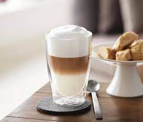

Кофе латте по-домашнему
Как приготовить кофе латте в домашних условиях: 1. Перемолоть зерна кофе в кофемолке. 2. Всыпать свежемолотый кофе в турку, залить холодной водой. 3. Поставить турку на медленный огонь, варить, пока не начнет подниматься пенка. 4. Как только пенка начала подниматься, снять кофе с огня. 5. Нагреть молоко, но не кипятить! Молоко должно быть прогретым (около 80 градусов). 6. Взбить венчиком молоко до состояния воздушной пены. 7. Половину молока налить в бокал для латте. 8. Через сито процедить кофе в стакан. Тонкой струйкой по стенке бокала влить в него эспрессо. 9. Сверху выложить готовую молочную пену. Вложить в бокал с напитком трубочку. Кофе латте по-домашнему готов. Приятного аппетита!